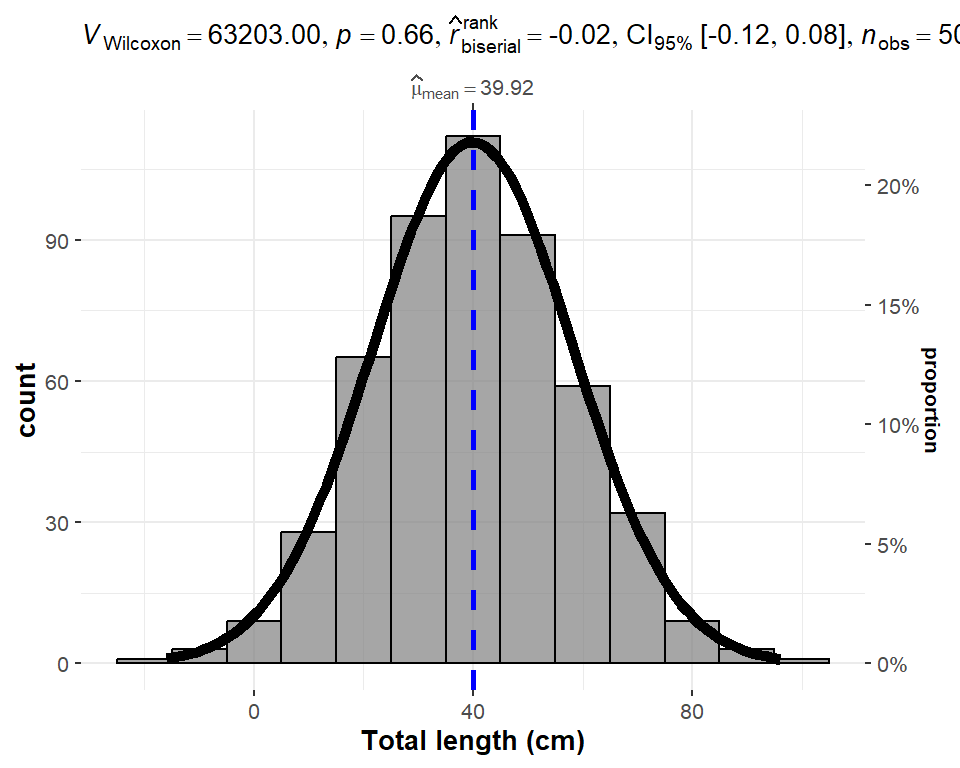

5 Data types and data frame
Before the beginning of data collection, it should be clearly defined which type of data one wants to collect. It may be operational data, biological data, economic data or socio-cultural data. Each data type may be used for a variety of indicators. Catch, for instance, may be used both in calculations of revenue for economic purposes and as a rough measure of resource depletion. The length frequency data of the catch can be collected for determining the healthy of the stock. The selection of a data type also depends on the available analyses.
There are several kind of data and require different kinds of statistical methods. For quantitative data we create boxplots and compute means, but for qualitative data we don’t. Instead we produce bar charts and summarise the data in tables either in percentage or proportion. We can summarize qualitative data by counting the number of observations in each category or by computing the proportion of the observations in each category. However, even when the qualitative data are identified by a numerical code, arithmetic operations such as addition, subtraction, multiplication, and division do not provide meaningful results. Arithmetic operations provide meaningful results for quantitative variables.
In R, a variable describes what kind of object is assigned to it. We can assign many different types of objects to the variable. It may for instance contain a number, text, date. In order to treat a correctly, R needs to know what data type its assigned object has. In some programming languages, you have to explicitly state what data type a variable has, but not in R. This makes programming in R simpler and faster, but can cause problems if a variable turns out to have a different data type than what you thought. The common six data types are highlighted in Figure 5.1;
For most people, it suffices to know about the first three in the list below:
- numeric: numbers like 1 and 16.823 (sometimes also called double);
- logical: true/false values (boolean): either TRUE or FALSE;
- character: text, e.g. “a”, “Indian Ocean.” and “FAO”;
- integer: integer numbers, denoted in R by the letter L: 1L, 55L;
- complex: complex numbers, like 2+3i. Rarely used in statistical work.
- date: date like 2022-12-15
In addition, these can be combined into special data types sometimes called data structures, examples of which include vectors and data frames. Important data structures include factor, which is used to store categorical data, and the awkwardly named POSIXct which is used to store date and time data.
5.0.1 Vectors
Often times we want to store a set of numbers in once place. One way to do this is using the vectors in R. Vector is the most basic data structure in R. It is a sequence of elements of the same data type. if the elements are of different data types, they be coerced to a common type that can accommodate all the elements. Vector are generally created using the c() function widely called concatenate, though depending on the type vector being created, other method. Vectors store several numbers– a set of numbers in one container. let us look on the example below
Notice that the c() function, which is short for concatenate wraps the list of numbers. The c() function combines all numbers together into one container. Notice also that all the individual numbers are separated with a comma. The comma is referred to an an item-delimiter. It allows R to hold each of the numbers separately. This is vital as without the item-delimiter, R will treat a vector as one big, unseperated number.
5.0.1.1 Numeric vector
The most common data type in R is numeric. The numeric class holds the set of real numbers — decimal place numbers. We create a numeric vector using a c() function but you can use any function that creates a sequence of numbers. For example, we can create a numeric vector of SST as follows;
We can check whether the variable sst is numeric with is.numeric function
5.0.1.2 Integer vector
Integer vector data type is actually a special case of numeric data. Unlike numeric, integer values do not have decimal places.They are commonly used for counting or indexing. Creating an integer vector is similar to numeric vector except that we need to instruct R to treat the data as integer and not numeric or double. To command R creating integer, we specify a suffix L to an element
Note
if your variable does not have decimals, R will automatically set the type as integers instead of numeric.
You can check if the data is integer with is.integer() and can convert numeric value to an integer with as.integer()
You can query the class of the object with the class() to know the class of the object
Although the object bb is integer as confirmed with as.integer() function, the class() ouput the answer as numeric. This is because the defaul type of number in r is numeric. However, you can use the function as.integer() to convert numeric value to integer
5.0.1.3 Character vector
In programming terms, we usually call text as string. This often are text data like names. A character vector may contain a single character , a word or a group of words. The elements must be enclosed with a single or double quotations mark.
[1] TRUE[1] "character"We can be sure whether the object is a string with is.character() or check the class of the object with class().
Note
Everything inside "" will be considered as character, no matter if it looks like character or not
5.0.1.4 Factor
Factor variables are a special case of character variables in the sense that it also contains text. However, factor variables are used when there are a limited number of unique character strings. It often represents a categorical variable. For instance, the gender will usually take on only two values, "female" or "male" (and will be considered as a factor variable) whereas the name will generally have lots of possibilities (and thus will be considered as a character variable). To create a factor variable use the factor() function:
[1] I II III IV V
Levels: I II III IV VTo know the different levels of a factor variable, use levels():
By default, the levels are sorted alphabetically. You can reorder the levels with the argument levels in the factor() function:
Character strings can be converted to factors with as.factor():
Code
[1] "character"[1] "factor"The character strings have been transformed to factors, as shown by its class of the type factor.
Often we wish to take a continuous numerical vector and transform it into a factor. The function cut() takes a vector of numerical data and creates a factor based on your give cut-points. Let us make a fictional total length of 508 bigeye tuna with rnorm() function.
Code

We can now breaks the distribution into groups and make a simple plot as shown in ?fig-lfq, where frequency of bigeye tuna color coded with the group size
Code
[1] TRUE[1] "Below 20" "30-60" "Above 60"
5.0.1.5 Logical
Logical data (or simply logical ) represent the logical TRUE state and the logical FALSE state. Logical variables are the variables in which logical data are stored. Logical variables can assume only two states:
- FALSE, always represent by 0;
- TRUE, always represented by a nonzero object. Usually, the digit 1 is used for TRUE.
We can create logical variables indirectly, through logical operations, such as the result of a comparison between two numbers. These operations return logical values. For example, type the following statement at the R console:
Since 5 is indeed greater than 3, the result of the comparison is true, however, 5 is not less than 3, and hence the comparison is false. The sign > and < are relational operators, returning logical data types as a result.
[1] TRUE[1] "logical"It is also possible to transform logical data into numeric data. After the transformation from logical to numeric with the as.numeric() command, FALSE values equal to 0 and TRUE values equal to 1:
Conversely, numeric data can be converted to logical data, with FALSE for all values equal to 0 and TRUE for all other values.
3## Date and Time
Date and time are also treated as vector in R
5.0.1.6 Generating sequence of vectors Numbers
There are few R operators that are designed for creating vecor of non-random numbers. These functions provide multiple ways for generating sequences of numbers
The colon : operator, explicitly generate regular sequence of numbers between the lower and upper boundary numbers specified. For example, generating number beween 0 and 10, we simply write;
However, if you want to generate a vector of sequence number with specified interval, let say we want to generate number between 0 and 10 with interval of 2, then the seq() function is used
unlike the seq() function and : operator that works with numbers, the rep() function generate sequence of repeated numbers or strings to create a vector
[1] 3 3 3 3[1] "Station1" "Station1" "Station1" "Station1"The rep() function allows to parse each and times arguments. The each argument allows creation of vector that that repeat each element in a vector according to specified number.
[1] "January" "January" "January" "March" "March" "March" "May"
[8] "May" "May" But the times argument repeat the whole vector to specfied times
5.0.1.7 Generating vector of normal distribution
The central limit theorem that ensure the data is normal distributed is well known to statistician. R has a rnorm() function which makes vector of normal distributed values. For example to generate a vector of 40 sea surface temperature values from a normal distribution with a mean of 25, and standard deviation of 1.58, we simply type this expression in console;
[1] 25.41518 25.21072 26.71524 25.31299 23.67707 24.93742 25.83991 23.72739
[9] 27.01509 26.31437 27.31131 26.74432 22.65567 23.33602 21.93929 25.57172
[17] 27.34873 24.16969 25.60321 25.09302 24.12103 25.58342 23.53130 27.83015
[25] 24.06510 25.36209 25.53053 26.75029 23.38904 24.79264 23.18190 23.25597
[33] 26.40546 25.21376 24.28244 23.52630 25.01735 25.61513 27.22470 25.007605.0.1.8 Rounding off numbers
There are many ways of rounding off numerical number to the nearest integers or specify the number of decimal places. the code block below illustrate the common way to round off:
5.0.1.9 Number of elements in a vector
Sometimes you may have a long vector and want to know the numbers of elements in the object. R has length() function that allows you to query the vector and print the answer
5.0.2 Data Frame
The basis for most data analyses in R are data frames – spreadsheet-like tables. data frame is the primary structures for storing data in R. Data frames are made up of rows and columns. The top row is a header and describes the contents of each variable. Each row represents an individual measured or observed record. Records can also have names. Each record contains multiple cells of values. The unique of data frame is the capability to different types of data - as you’d expect, the different types of objects have different properties and can be used with different functions. Here’s the run-down of four common types:
matrix: a table where all columns must contain objects of the same type (e.g. all numeric or all character). Uses less memory than other types and allows for much faster computations, but is difficult to use for certain types of data manipulation, plotting and analyses.
data.frame: the most common type, where different columns can contain different types (e.g. one numeric column, one character column).
data.table: an enhanced version of data.frame.
tibble: another enhanced version of data.frame.
Let’s illustrates data frame using historical catch data in the Western Indian Ocean Region from FAO. This dataset is called landings_wio_country.csv and contains some data about total landed catches of ten countries in the WIO region reported in FAO between 1951 and 2015.
# A tibble: 10 × 3
country year catch
<chr> <dbl> <dbl>
1 Kenya 2015 33080
2 Tanzania 2015 110703
3 Zanzibar 2015 45972
4 Seychelles 2015 325291
5 South Africa 2015 1086810.
6 Mozambique 2015 16080
7 Somalia 2015 1831
8 Mauritius 2015 16373
9 Mayotte 2015 28936
10 Madagascar 2015 145629 Notice that data frame follow the same structure: each column represents a variable (e.g. country, year, catch) and each row represents an record (e.g. an individual). This is the standard way to store data in R (as well as the standard format in statistics in general). In what follows, we will use the terms column and variable interchangeably, to describe the columns/variables in a data frame. That is imported data, but R allows us to create data frames and add attributes to data frames. Perhaps the easiest way to create a data frame is to parse vectors in a data.frame() function. For instance, in this case we create a simple data frame dt and assess its internal structure
Code
'data.frame': 3 obs. of 3 variables:
$ country : chr "Kenya" "Mozambique" "Seychelles"
$ weight : num 90 75 92
$ maturity: chr "I" "II" "V"Note how Variable Name in dt was converted to a column of factors . This is because there is a default setting in data.frame() that converts character columns to factors . We can turn this off by setting the stringsAsFactors = FALSE argument:
Code
'data.frame': 3 obs. of 3 variables:
$ country : chr "Kenya" "Mozambique" "Seychelles"
$ weight : num 90 75 92
$ maturity: chr "I" "II" "V"Now the variable Name is of character class in the data frame. The inherited problem of data frame to convert character columns into a factor is resolved by introduction f advanced data frames called tibble (Müller and Wickham 2022), which provides sticker checking and better formating than the traditional data.frame.
Code
Rows: 3
Columns: 3
$ country <chr> "Kenya", "Mozambique", "Seychelles"
$ weight <dbl> 90, 75, 92
$ maturity <chr> "I", "II", "V"Table 5.1 show the the data frame created by fusing the two vectors together.
| country | weight | maturity |
|---|---|---|
| Kenya | 90 | I |
| Mozambique | 75 | II |
| Seychelles | 92 | V |
Because the columns have meaning and we have given them column names, it is desirable to want to access an element by the name of the column as opposed to the column number.In large Excel spreadsheets I often get annoyed trying to remember which column something was. The $sign and []are used in R to select variable from the data frame.
[1] "Kenya" "Mozambique" "Seychelles"[1] "Kenya" "Mozambique" "Seychelles"The FSA package in R has build in dataset that we can use for illustration. For example, ChinookArg dataset contains total length and weight of 112 Chinook salmon collected in three sites in Argentina. (Table 5.2).
| tl | w | loc |
|---|---|---|
| 18.0 | 0.1 | Puyehue |
| 82.2 | 6.7 | Argentina |
| 62.7 | 3.0 | Puyehue |
| 88.7 | 10.8 | Argentina |
| 59.9 | 3.9 | Argentina |
| 97.2 | 7.9 | Petrohue |
| 99.0 | 9.7 | Argentina |
| 74.5 | 4.6 | Puyehue |
| 57.7 | 2.6 | Puyehue |
| 32.1 | 2.8 | Puyehue |
| 94.9 | 11.8 | Argentina |
| 64.2 | 1.6 | Puyehue |
Sometimes you may need to create set of values and store them in vectors, then combine the vectors into a data frame. Let us see how this can be done. First create three vectors. One contains id for ten individuals, the second vector hold the time each individual signed in the attendane book and the third vector is the distance of each individual from office. We can concatenate the set of values to make vectors.
Code
vessel.id = c(1,2,3,4,5,6,7,8,9,10)
departure.time = lubridate::ymd_hms(c("2018-11-20 06:35:25 EAT", "2018-11-20 06:52:05 EAT",
"2018-11-20 07:08:45 EAT", "2018-11-20 07:25:25 EAT",
"2018-11-20 07:42:05 EAT", "2018-11-20 07:58:45 EAT",
"2018-11-20 08:15:25 EAT", "2018-11-20 08:32:05 EAT",
"2018-11-20 08:48:45 EAT", "2018-11-20 09:05:25 EAT"), tz = "")
distance.ground = c(20, 85, 45, 69, 42, 52, 6, 45, 36, 7)Once we have the vectors that have the same length dimension, we can use the function data.frame() to combine the the three vectors into one data frame shown in Table 5.3
| vessel.id | date | time | distance.ground |
|---|---|---|---|
| 1 | 2018-11-20 | 06:35:25 | 20 |
| 2 | 2018-11-20 | 06:52:05 | 85 |
| 3 | 2018-11-20 | 07:08:45 | 45 |
| 4 | 2018-11-20 | 07:25:25 | 69 |
| 5 | 2018-11-20 | 07:42:05 | 42 |
| 6 | 2018-11-20 | 07:58:45 | 52 |
| 7 | 2018-11-20 | 08:15:25 | 6 |
| 8 | 2018-11-20 | 08:32:05 | 45 |
| 9 | 2018-11-20 | 08:48:45 | 36 |
| 10 | 2018-11-20 | 09:05:25 | 7 |
5.1 Importing Data
So far, we’ve looked at several dataset in previous chapter and we have also created ourselves some datasets. While you can do all your data entry work in R or Excel, it is much more common to load data from other sources. Local and international organization have been collecting fisheries dependent and fisheries independent data for years. These historical dataset with fisheries information like fish catch, effort, landing sites, fishing ground and critical habitats can be obtained from several databases—some are open and other closed. Much of the data we download or receive from is either comma-separated value files .csv or and Excel spreadsheets, .xlsx. .csv files are spreadsheets stored as text files - basically Excel files stripped down to the bare minimum - no formatting, no formulas, no macros. You can open and edit them in spreadsheet software like LibreOffice Calc, Google Sheets or Microsoft Excel. Many devices and databases can export data in .csv format, making it a commonly used file format that you are likely to encounter sooner rather than later.
Whether that be a comma separated (csv) or a tab delimited file, there are multiple functions that can read these data into R. We will stick to loading these data from the tidyverse packages but be aware these are not the only methods for doing this. We will use the tidyverse functions just to maintain consistency with everything else we do. The first package in tidyverse we will use is called readr (Wickham, Hester, and Bryan 2022), which is a collection of functions to load the tabular data from working directory in our machine into R session. Some of its functions include:
-
read_csv(): comma separated (CSV) files -
read_tsv(): tab separated files -
read_delim(): general delimited files -
read_fwf(): fixed width files -
read_table(): tabular files where columns are separated by white-space. -
read_log(): web log files - readxl reads in Excel files.
Before we import the data, we need to load the packages that we will use their functions in this chapter
5.1.1 Importing csv files
A CSV file is a type of file where each line contains a single record, and all the columns are separated from each other via a comma. In order to load data from a file into R, you need its path - that is, you need to tell R where to find the file. Unless you specify otherwise, R will look for files in its current working directory. You can read .csv file using read_csv() function of the readr package (Wickham, Hester, and Bryan 2022) as shown in the chunk below;
We imported tidy_LFQ_sample_4.csv from working directory into R using read_csv() and specify the path to the file in your working directory and store as imported.lfq. If you get an error message, it means thattidy_LFQ_sample_4.csvis not in your working directory. Either move the file to the right directory (remember, you can use rungetwd()` to see what your working directory is) or change your working directory.
If you glimpse the dataframe with glimpse() function, you should see the internal structure of the imported.lfq object we just loaded;
Rows: 6,185
Columns: 6
$ site <chr> "Mombasa", "Mombasa", "Mombasa", "Mombasa", "Mombasa", "Mombasa"…
$ date <date> 2019-04-05, 2019-04-05, 2019-04-05, 2019-04-05, 2019-04-05, 201…
$ tl_mm <dbl> 184, 185, 145, 189, 175, 165, 181, 176, 164, 154, 188, 186, 179,…
$ fl_mm <dbl> 169, 169, 134, 173, 161, 153, 165, 163, 148, 142, 173, 173, 164,…
$ wt_gm <dbl> 59.50, 54.71, 24.15, 61.36, 49.31, 38.54, 49.68, 45.27, 36.26, 3…
$ sex <chr> "M", "M", "M", "M", "M", "M", "M", "M", "M", "M", "M", "M", "M",…The dataset contains six variables and 6,185 records. The variables site and sex both contain text, and have been imported as character vectors4. The date column has been imported as date format, the variable tl_mm and fl_mm are measured length and have been imported as numeric vector measured in millimeters. The variable wt_gm is the weight of fish measured in grams and also have been imported as numeric vector.
So, what can you do in case you need to import data from a file that is not in your working directory? This is a common problem, as many of us store script files and data files in separate folders (or even on separate drives). One option is to use file.choose, which opens a pop-up window that lets you choose which file to open using a graphical interface:
This solution work just fine if you just want to open a single file once. But if you want to reuse your code or run it multiple times, you probably don’t want to have to click and select your file each time. Instead, you can specify the path to your file in the call to read_csv.
5.1.2 Importing Excel files
Commonly our data is stored as a Excel file. There are several packages that can be used to import Excel files to R. I prefer the readxl package (Wickham and Bryan 2022), so let’s install that:
The package has read_exel() function that allows us to specify which sheet within the Excel file to read. The function automatically convert the worksheet into a .csv file and read it. Let’s us import the the data in first sheet of the tidy_LFQ_sample_4.xlsx. Is a similar dataset that just imported in the previous section, but is in Excel format. We will use this file to illustrate how to import the excel file into R workspace with readxl package (Wickham and Bryan 2022).
# A tibble: 6,185 × 6
site date tl_mm fl_mm wt_gm sex
<chr> <dttm> <dbl> <dbl> <dbl> <chr>
1 Mombasa 2019-04-05 00:00:00 184 169 59.5 M
2 Mombasa 2019-04-05 00:00:00 185 169 54.7 M
3 Mombasa 2019-04-05 00:00:00 145 134 24.2 M
4 Mombasa 2019-04-05 00:00:00 189 173 61.4 M
5 Mombasa 2019-04-05 00:00:00 175 161 49.3 M
6 Mombasa 2019-04-05 00:00:00 165 153 38.5 M
7 Mombasa 2019-04-05 00:00:00 181 165 49.7 M
8 Mombasa 2019-04-05 00:00:00 176 163 45.3 M
9 Mombasa 2019-04-05 00:00:00 164 148 36.3 M
10 Mombasa 2019-04-05 00:00:00 154 142 31.9 M
# ℹ 6,175 more rows| Name | Piped data |
| Number of rows | 6185 |
| Number of columns | 6 |
| _______________________ | |
| Column type frequency: | |
| character | 2 |
| numeric | 3 |
| POSIXct | 1 |
| ________________________ | |
| Group variables | None |
Variable type: character
| skim_variable | n_missing | complete_rate | min | max | empty | n_unique | whitespace |
|---|---|---|---|---|---|---|---|
| site | 0 | 1 | 3 | 7 | 0 | 2 | 0 |
| sex | 0 | 1 | 1 | 1 | 0 | 2 | 0 |
Variable type: numeric
| skim_variable | n_missing | complete_rate | mean | sd | p0 | p25 | p50 | p75 | p100 | hist |
|---|---|---|---|---|---|---|---|---|---|---|
| tl_mm | 0 | 1 | 170.77 | 21.08 | 97.0 | 157.00 | 171.00 | 183.00 | 269.00 | ▁▅▇▁▁ |
| fl_mm | 0 | 1 | 156.00 | 19.26 | 18.1 | 144.00 | 156.00 | 168.00 | 241.00 | ▁▁▅▇▁ |
| wt_gm | 0 | 1 | 46.03 | 19.51 | 7.0 | 32.77 | 43.59 | 55.28 | 194.18 | ▇▆▁▁▁ |
Variable type: POSIXct
| skim_variable | n_missing | complete_rate | min | max | median | n_unique |
|---|---|---|---|---|---|---|
| date | 0 | 1 | 2016-03-31 | 2020-09-11 | 2020-02-25 | 42 |
5.2 Saving and exporting your data
In many a case, data manipulation is a huge part of statistical work, and of course you want to be able to save a data frame after manipulating it. There are two options for doing this in R - you can either export the data as e.g. a .csv or a .xlsx file, or save it in R format as an .RData file.
5.2.1 Exporting data
Just as we used the functions read_csv and read_excel to import data, we can use write_csvto export it. The code below saves the bookstore data frame as a .csv file file, which will be created in the current working directory. If you wish to store
5.2.2 Saving and loading R data
Being able to export to different spreadsheet formats is very useful, but sometimes you want to save an object that can’t be saved in a spreadsheet format. For instance, you may wish to save a multiple processed data, functions and formula that you’ve created. .RData files can be used to store one or more R objects. To save the objects bookstore and age in a .Rdata file, we can use the save function: